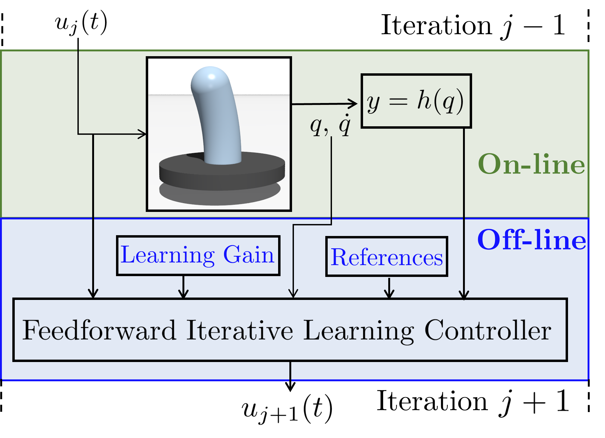

Iterative Learning Control

A Classic Iterative Control scheme
To compensate for the reality gap, we implemented different Iterative Learning Control (ILC) algorithm.
Repetion after repetion of a fixed trajectory, the iterative controller update its action until a minimazion of the tracking error is achieved.
ILC has serval properties worth mentioning:
- Mostly works in a feedforward fashion being able to preserve the elasticty of the robot.
- Can exploit model-based initial guess or terms in the controller itself to speed up the learning process.
- Compensate for the underactuation of the robot.
- Use real data for the learning process implementing a learning-while-doing paradigm.
- Thoeretical guarantee for the convergence of the tracking error via sufficcient conditions.
We publish the following papers
- Iterative Learning Control for Compliant Underactuated Robots.
- A Provably Stable Iterative Learning Control for continuum Soft Robots.
- A Robust Iterative Learning Control for Continuous-time Nonlinear Systems with Disturbances.
- Swing-up of Underactuated Compliant arms via Iterative Learning Control.
- Trajectory Tracking of a One-Link Flexible arm via Iterative Learning Control.
Combining ILC with Reinforcment Learning
ILC with RL scheme
This combined framework tries to combine the best features of both the controllers:
- Feedforward and feedback actions for preserving the elasticty and incresing the robustness of the controller.
- Sampling quality data for the traning.
- Use real data for the testing process implementing a learning-while-doing paradigm.
- Thoeretical guarantee for the convergence of the tracking error via sufficcient conditions.